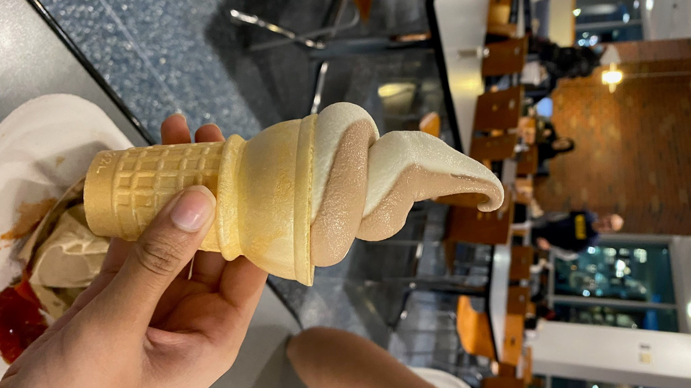

Diving Deep into MDining
by Pranathi Dandamudi and Oliver Gao
March 2022 to November 2023

Let's get started with a poem reading from Matt!
Curly fries cure my cries
Chicken tenders on my thighs.
Cheesy bread is what you said
Garlic bread is in my head.
Through the crowds, I will plow
Please explore our data now.
We analyzed data documenting the meal swipes of students at each dining hall along with the food items that were served. Read on to take a deeper dive into the dining halls through a series of interactive data visualizations.
We found that out of all the meals, the top items served for breakfast are the most similar across all dining halls. You can always count on Oatmeal and Scrambled Eggs being served during breakfast at all seven dining halls. The dining halls begin to show some character at lunch as the top items served begin to vary. South Quad and Mosher-Jordan serve Sandwiches Made to Order the most. Markley and North Quad offer a steady sweet treat, serving Chocolate Chunk Cookies almost every day. Bursley and East Quad are on the cheese squad, regularly serving the duo of Cheese Bread and Cheese Pizza.
We know you’ve been waiting for those Chicken Tenders all week. There’s a good chance your local dining hall will be serving them on Friday. Don’t sleep on Twigs at Oxford though. It might be small, but it can pump out Chicken Tenders like nobody’s business on Fridays.
Are you vegetarian? Don’t worry, we didn’t forget about you. Lucky for you, Scrambled Tofu is served everywhere on Sundays.
Have another item you’ve been thinking about? Use the visual below to find out when and where your favorite menu item is served the most.
Do you want us to let you in on a little secret? If you ever want to just eat a meal in peace and avoid the crowds, go to South Quad, Bursley, or Mosher-Jordan anytime from 3-4 PM on a weekday. Who knows? You might even have a chance at getting a whole table to yourself.
We hope this was useful as you embark on your dining hall adventure. Bon Appetit! See you next year!